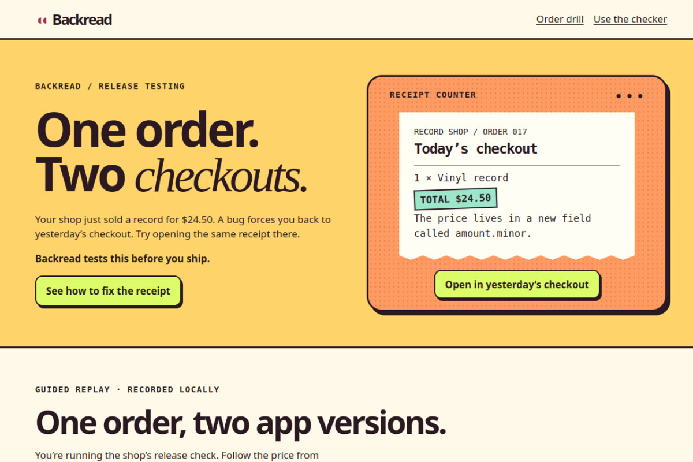
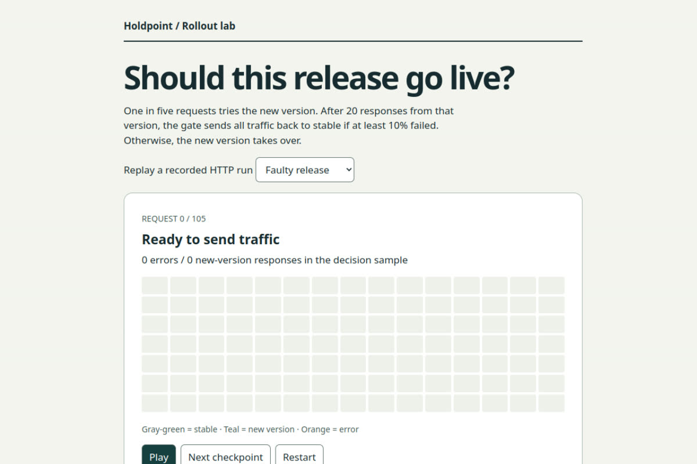
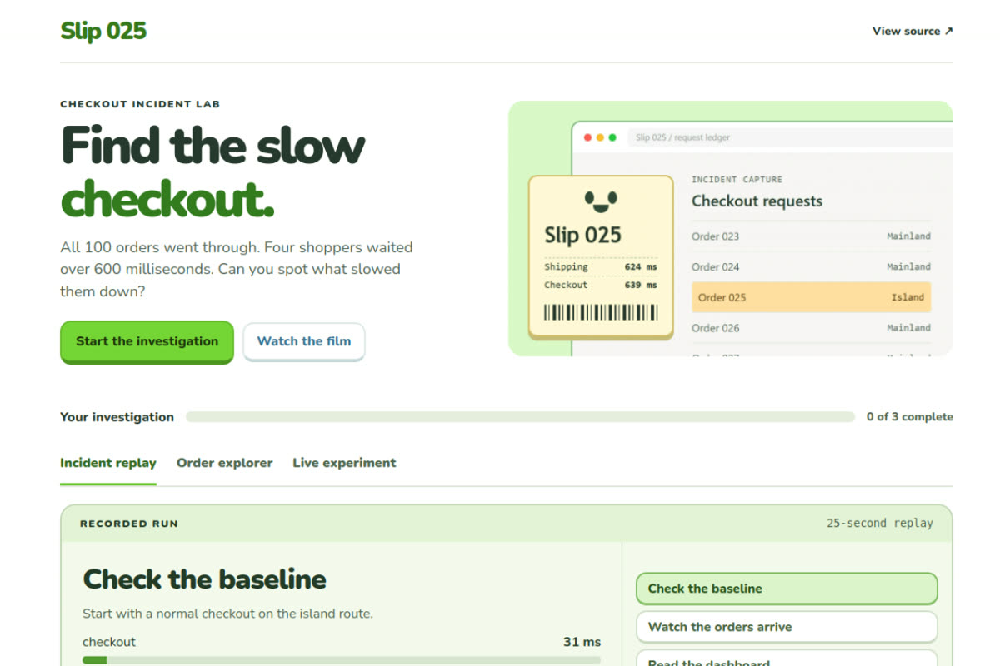
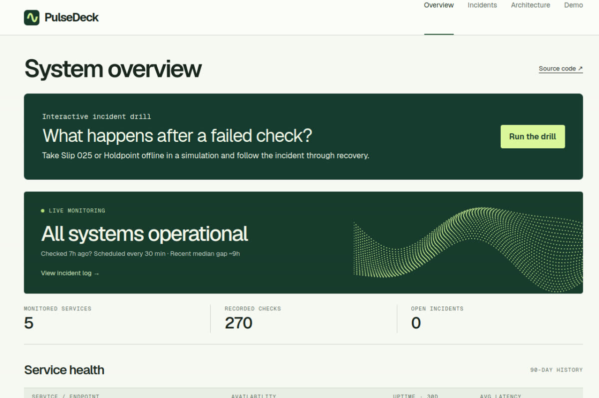

BackRead
LiveA rollback lab that tests whether the old release can still read new data.
Engineering portfolio
Rollback experiments, infrastructure builds and open-source workflows.
23 blueprints merged into kestra-io/blueprints during Hacktober 2026 (Track 02): Kubernetes watchers, resource janitors, and automation utilities. I runtime-verified each one with a demo video. Four made it into Kestra's official blueprint gallery.

A rollback lab that tests whether the old release can still read new data.

A canary lab. Every 5th request tries the candidate, and 10% failures abort it.

A latency lab. 300 orders all returned 200, yet 4 slow ones hid from p95.

A live status page. Checks 5 services every 30 minutes and files incidents itself.

A GitOps pipeline. ArgoCD and Helm deploy on their own, with automatic rollback.

AWS infra in Terraform, 4 modules. Encrypted, locked down, state in S3.
IEEE Xplore · Accepted Feb 2026
Real-Time Load-Aware Resource Allocation in Cloud Systems
Peer-reviewed research on load-aware allocation, 15–30% better load optimisation.